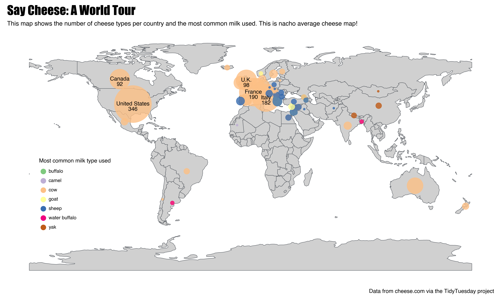
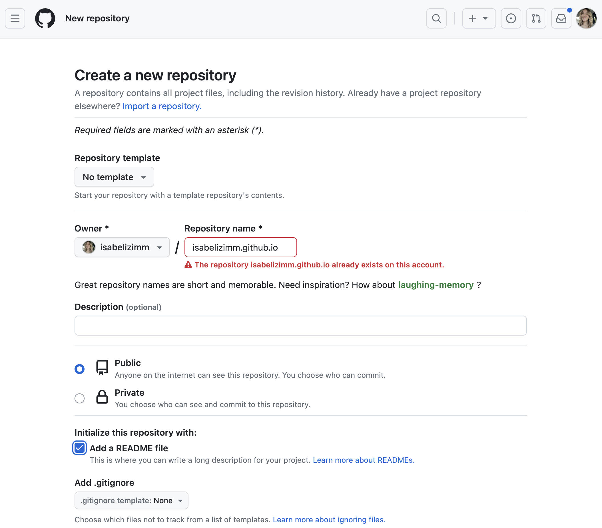
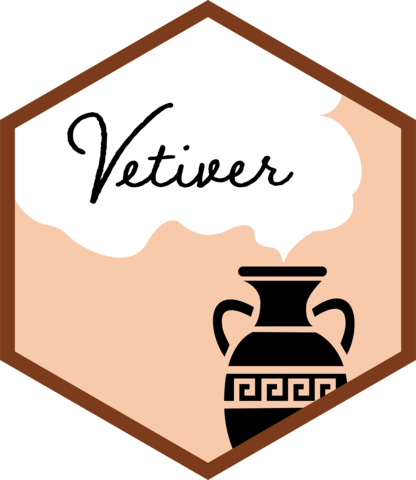
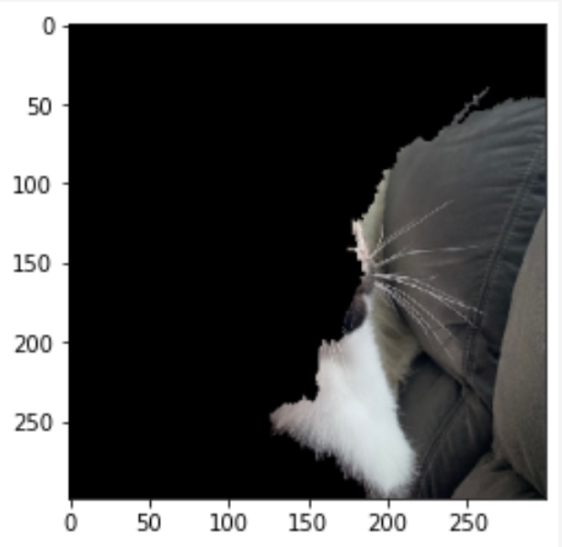

isabel zimmerman
about
blog
work
Categories
AI
conferences
cookies
fun
git
mlops
python
quarto
Getting Started with Cline in Positron
AI
A quick guide to using the Cline AI assistant in Positron.
Mar 21, 2025
Reading Time Calculator
fun
Calculate the time remaining in an audiobook.
Jan 27, 2025
Cookie reviews: chocolate chocolate chip
cookies
4.5/5 ⭐ double chocolate and YUM!
Jan 20, 2025

Plotnine plot contest
python
A very cheesy map made with
plotnine
Jun 25, 2024
Cookie reviews: chocolate chip with cornstarch and heavy cream
cookies
3.75/5 ⭐ very sweet, very chewy
Jun 5, 2024
Abstract art
conferences
How to create an abstract to inform and delight.
May 14, 2024
The right tools to learn (my first experience using Spline)
fun
Sometimes, you don’t need the best tool for the job, you need the best tool for you.
Apr 15, 2024
So, you want to learn about MLOps
mlops
My recommendations to learning about MLOps
Apr 5, 2024
Blind date with a data talk
conferences
Pick a mood, watch a talk!
Mar 7, 2024

We’re making a blog (IDE agnostic edition)
quarto
Making a Quarto blog and deploying it on GitHub Pages, step by step.
Sep 4, 2023

A year in review: vetiver
mlops
It has been almost a year of vetiver! Vetiver for Python (0.1.8) and R (0.1.8) seeks to provide fluent tooling to version, share, deploy, and monitor a trained model.
Oct 25, 2022
Pyenv in RStudio
python
Using pyenv in the RStudio IDE.
Sep 19, 2022
Multiple models on one API
mlops
Deploying multiple models to one VetiverAPI.
Sep 10, 2022
Github Actions all the way down
git
Using Github Actions to create new repos that also run their own Github Actions.
Mar 30, 2022

Cat detection with explainers
python
Anchor explainers on images to better understand model decision-making.
Mar 20, 2022
No matching items